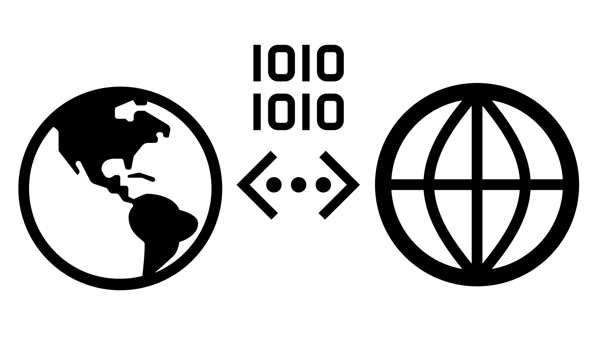

The Environmental AI book
Welcome
Preamble
About this book
Who is the book for?
How to use this book
How to cite and reuse this material
Environments
Forest
Sensors
FluxNet
Modelling
Structure
Tree Crown
Polar
Sensors
Random
Modelling
Temperature
Urban
Sensors
Met Office UKV high-resolution
Modelling
Wildfires
Sensors
Modelling
Digital Twins
Overview
Concepts
Community
Coworking Calls
Background, Motivations, and Techniques
Online Collaboration Cafe
Meeting Notes
The Environmental AI
⛰ 🌳 🏙️ ❄️ 🔥 🌊 online Collaboration Cafe
Online Journal Club
Template Collection
Online Collaboration Cafe
Online Journal Club
Environments Use Case Sensors
Environments Use Case Modelling
Interesting readings
Afterword
Glossary
Bibliography
Execution statistics
.md
.pdf
repository
open issue
suggest edit
Urban: Sensors
¶
Note
Under construction
Urban: Overview
Urban: Met Office UKV high-resolution atmosphere model data